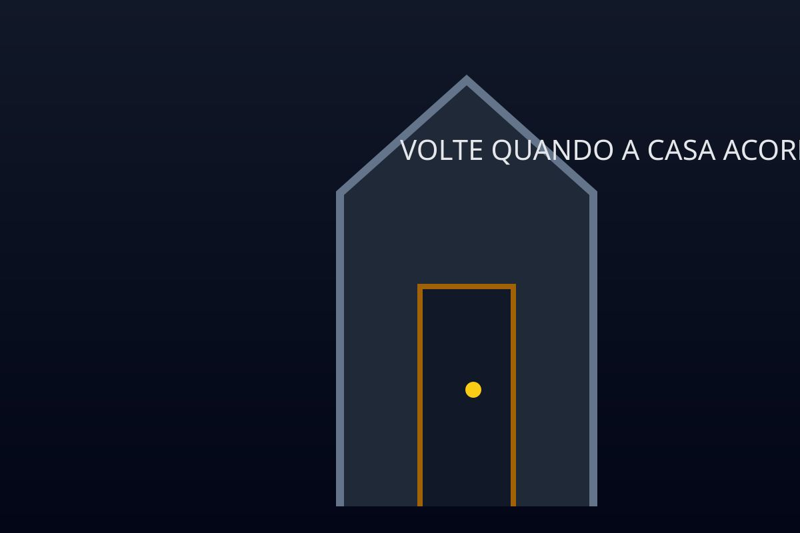

ARQUIVO INTERROMPIDO
Não foi possível abrir a narrativa
Verifique o conteúdo e tente novamente.
HORROR WEB COMIC
A Casa que Respira
1 / 4

O vestíbulo escuro se abre diante de uma antiga porta de madeira trancada, com a maçaneta enferrujada e uma fresta de luz fria vazando pela soleira. No alto da porta, uma placa de metal gasta traz em letras altas a inscrição “VOLTE QUANDO A CASA ACORDAR”. Uma sombra atravessa a fresta sem corpo que a projete, enquanto o ar parado pesa com poeira. Ao fundo, cada ranger que desce da escada parece responder à respiração da casa, e a madeira da porta estala como se acordasse.